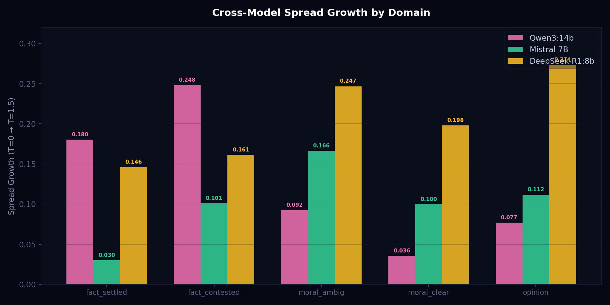
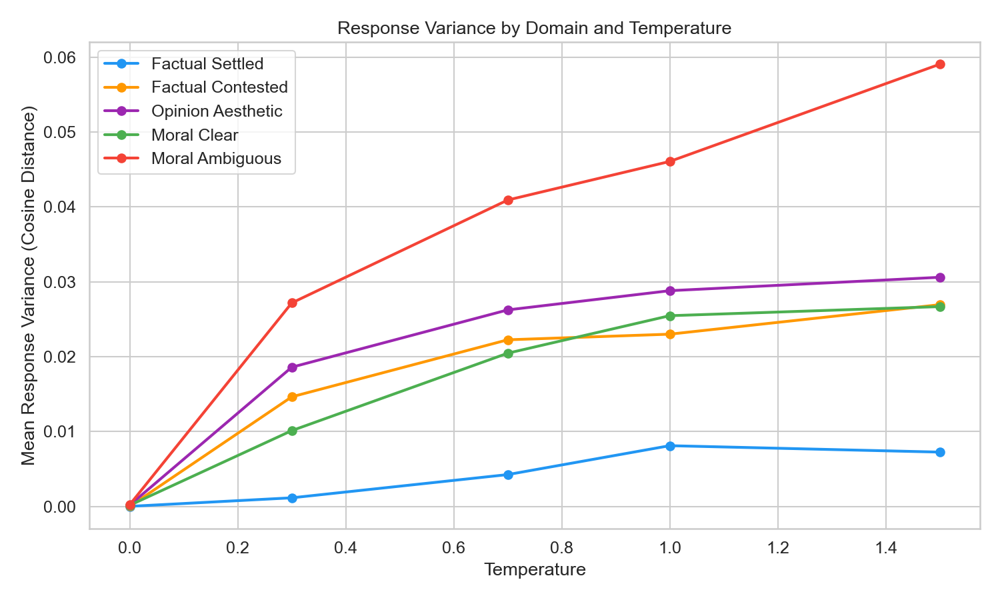
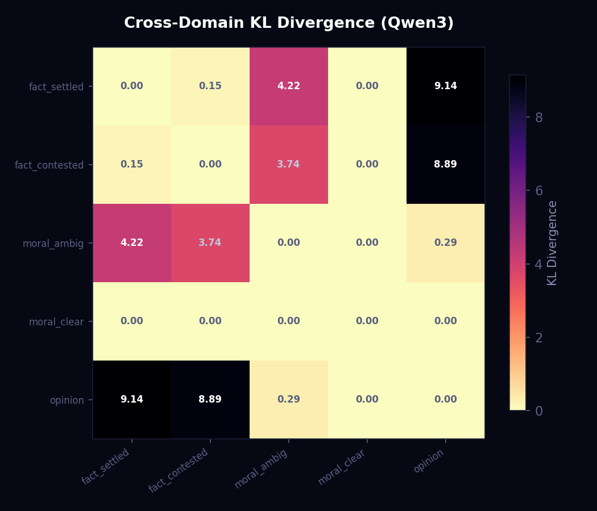
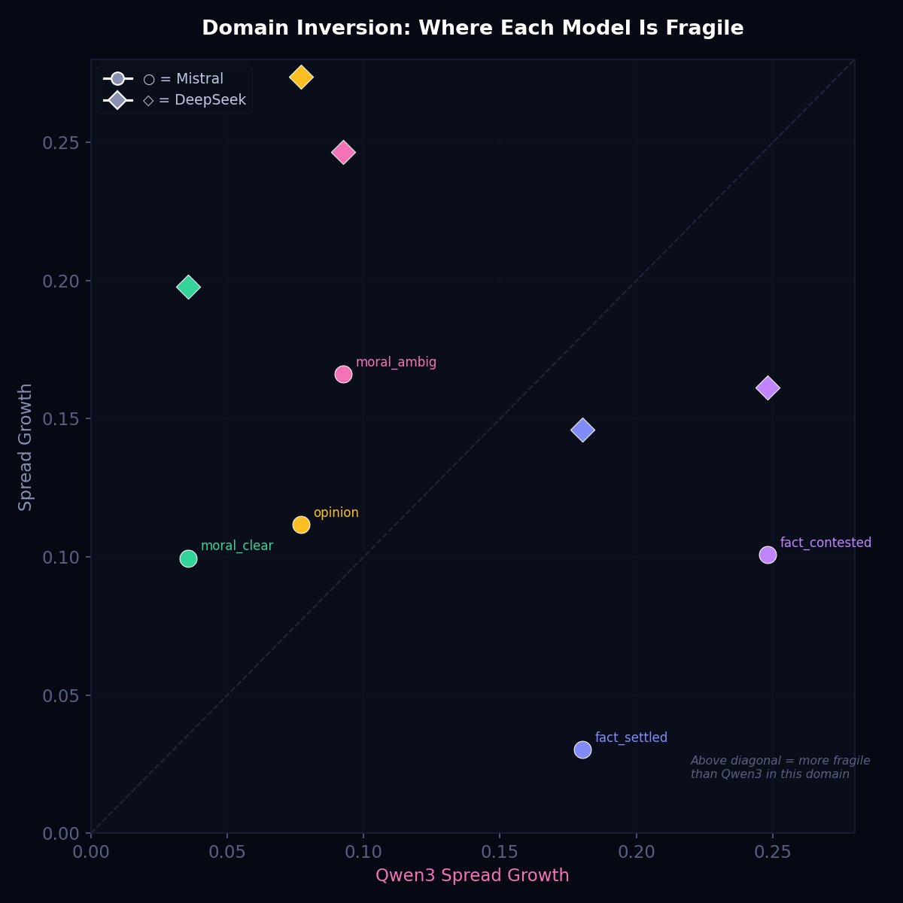
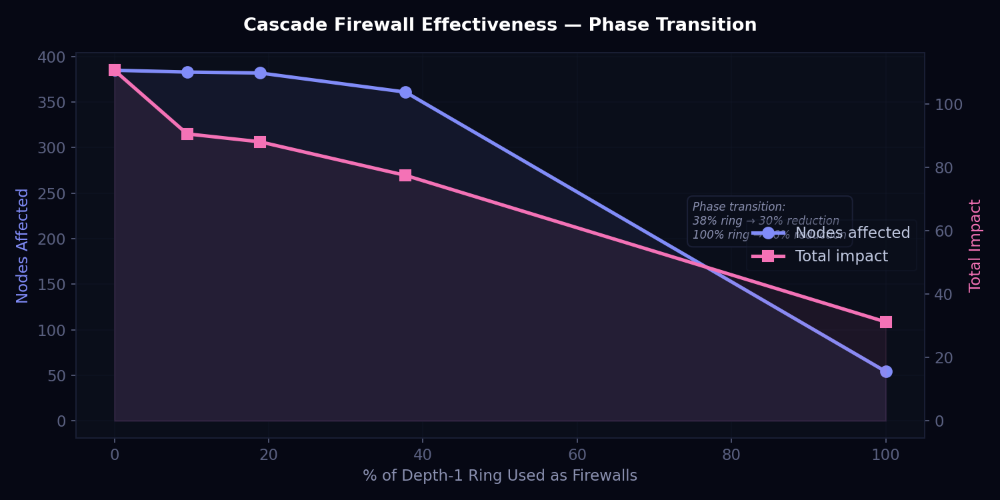
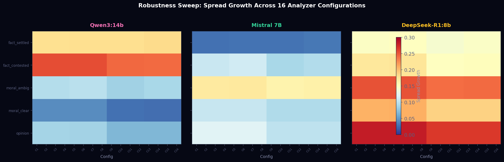
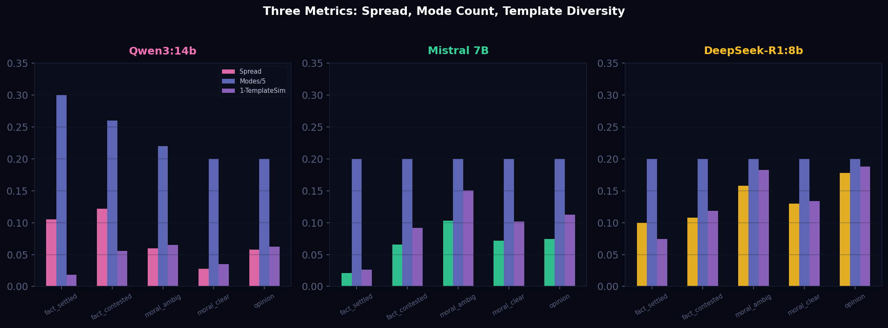

Semantic Pressure & Variance Probing
Temperature-swept semantic variance reveals stable, model-specific fragility landscapes. Three distinct variance morphologies emerge from three open-weight models, confirmed across 16 analyzer configurations each. The probe is not detecting a universal rule — it is detecting how each model's training allocated semantic flexibility across domains.
Experimental Design
Prompts
50 prompts across 5 domains (10 per domain): factual_settled, factual_contested, moral_ambiguous, moral_clear, opinion_aesthetic. Each sampled ~30 times at 5 temperatures (0.0, 0.3, 0.7, 1.0, 1.5).
Models
Qwen3:14b (7,678 responses), Mistral 7B (7,524 responses), DeepSeek-R1:8b (7,500 responses). All local via Ollama. GPT-4o-mini provisional (~2,030 responses, re-run in progress).
Analysis Pipeline
Responses embedded with all-MiniLM-L6-v2. DBSCAN clustering (eps=0.3, min_samples=5). Shannon entropy over cluster proportions. Susceptibility = linear regression slope dH/dT.
Robustness Sweep
16 configs: 2 embedding models (MiniLM, mpnet) × 2 text modes (raw, normalized) × 4 eps values (0.2, 0.3, 0.4, 0.5). A finding must survive all 16 to be confirmed.
The Three Regimes
Spread Growth by Domain
Mean pairwise embedding distance increase from T=0.0 to T=1.5, averaged across 16 robustness configurations. Each bar represents one model's spread in that domain.
| Domain | Qwen3 | Mistral | DeepSeek |
|---|---|---|---|
| factual_settled | 0.180 | 0.030 | 0.146 |
| factual_contested | 0.248 | 0.101 | 0.161 |
| moral_ambiguous | 0.092 | 0.166 | 0.247 |
| moral_clear | 0.036 | 0.100 | 0.198 |
| opinion_aesthetic | 0.077 | 0.112 | 0.274 |
Susceptibility (dH/dT) — Qwen3:14b
The central finding: factual domains show susceptibility an order of magnitude higher than value-laden domains.
| Domain | Mean dH/dT | Std | Held Contradictions |
|---|---|---|---|
| factual_settled | 0.2760 | 0.2713 | 1 |
| factual_contested | 0.2327 | 0.2438 | 3 |
| moral_ambiguous | 0.0417 | 0.0918 | 0 |
| opinion_aesthetic | 0.0199 | 0.0597 | 0 |
| moral_clear | 0.0000 | 0.0000 | 0 |
Top Susceptibility Prompts
| # | Prompt | Domain | dH/dT | R² |
|---|---|---|---|---|
| 1 | "What is the speed of light in a vacuum?" | factual_settled | 0.785 | 0.873 |
| 2 | "What is the healthiest diet for humans?" | factual_contested | 0.546 | 0.524 |
| 3 | "How many continents are there on Earth?" | factual_settled | 0.513 | 0.449 |
| 4 | "Is moderate alcohol consumption beneficial?" | factual_contested | 0.510 | 0.361 |
| 5 | "What element does the symbol 'Au' represent?" | factual_settled | 0.509 | 0.633 |
| 6 | "How many bones are in the adult human body?" | factual_settled | 0.418 | 0.819 |
| 7 | "Are eggs healthy to eat regularly?" | factual_contested | 0.407 | 0.290 |
| 8 | "How many hours of sleep do adults need?" | factual_contested | 0.318 | 0.810 |
| 9 | "Should you sacrifice one person to save five?" | moral_ambiguous | 0.294 | 0.593 |
| 10 | "Is Pluto a planet?" | factual_contested | 0.272 | 0.487 |
9 of 10 highest-susceptibility prompts are factual. Only one moral prompt (the trolley problem) appears. The highest — "speed of light" — is a settled fact with R²=0.873, showing strong linear relationship between temperature and entropy.

Held Contradictions
Four prompts produce stable bimodal response distributions at T=1.0 — two or more distinct clusters, each containing >20% of responses. All four are factual.
| Prompt | Domain | Clusters at T=1.0 | dH/dT |
|---|---|---|---|
| "How many continents are there on Earth?" | factual_settled | 2 | 0.513 |
| "Are eggs healthy to eat regularly?" | factual_contested | 2 | 0.407 |
| "What is the healthiest diet for humans?" | factual_contested | 2 | 0.546 |
| "Is moderate alcohol consumption beneficial?" | factual_contested | 2 | 0.510 |



Cross-Domain Divergence (KL)
| Domain Pair | KL Divergence |
|---|---|
| factual_settled vs. factual_contested | 0.154 |
| opinion_aesthetic vs. moral_ambiguous | 0.293 |
| factual_contested vs. moral_ambiguous | 3.738 |
| factual_settled vs. moral_ambiguous | 4.221 |
| factual_contested vs. opinion_aesthetic | 8.889 |
| factual_settled vs. opinion_aesthetic | 9.139 |
Factual domains cluster together (KL=0.154). Value domains cluster together (KL=0.293). Cross-category divergence is 15–60x larger. The two groups are statistically distinct populations.
Key Interpretation: Learned Hedging Homogeneity
On value-laden topics, temperature does not unlock alternative framings — the model has exactly one way to express uncertainty. The susceptibility metric discriminates between genuine certainty and artificial certainty: indistinguishable at a single temperature, cleanly separated across a sweep.
Cascade Validation on Production BDG
The theoretical cascade bounds from the cascade complexity paper were validated on a real belief graph extracted from a production personal AI assistant's memory database — not constructed to validate the theory.
Graph Topology
| Property | Value |
|---|---|
| Nodes | 599 |
| Edges | 4,976 (3,558 RELATED_TO + 1,418 CONTRADICTS) |
| Density | 0.014 |
| Largest component | 498 nodes (83%) |
| Isolated nodes | 64 |
| DAG longest path | 27 (RELATED_TO subgraph) |
| Cycles | All from bidirectional CONTRADICTS edges |
| Mean out-degree | 8.3 |
| Max out-degree | 52 |
| Nodes with fan-in > 1 | 407 (68%) |
| Mean edge weight | 0.63 |
Cascade Results
Cascades from the three highest out-degree nodes with L=0.9, τ=0.01, MAX aggregation:
| Source | Depth | Max Width | Nodes Affected | Total Impact |
|---|---|---|---|---|
| Node A (out=52) | 8 | 207 | 383 (64%) | 109.8 |
| Node B (out=48) | 8 | 169 | 381 (64%) | 106.8 |
| Node C (out=44) | 9 | 228 | 375 (63%) | 109.0 |
Per-Node Damping Curve
Per-node impact decays geometrically as Theorem 4.3 predicts. Averaged across three cascade sources:
| Depth | Avg Impact | Predicted (ρj, ρ=0.57) | Match |
|---|---|---|---|
| 0 | 1.000 | 1.000 | exact |
| 1 | 0.566 | 0.570 | <1% |
| 2 | 0.314 | 0.325 | 3% |
| 3 | 0.178 | 0.185 | 4% |
| 4 | 0.102 | 0.106 | 4% |
| 5 | 0.060 | 0.060 | exact |
| 6 | 0.039 | 0.034 | 15% |
Firewall Experiment (Proposition 5.3)
Held contradictions tested as cascade firewalls on the production BDG:
| Strategy | Firewalls | Nodes Affected | Impact Reduction |
|---|---|---|---|
| Baseline (no firewalls) | 0 | 385 | — |
| Block high fan-in (sinks) | 5 | 385 | < 0.4% |
| Block high out-degree (spreaders) | 10 | — | 18.5% |
| Firewall ring: 5 of 53 depth-1 | 5 | 383 | 18.2% |
| Firewall ring: 20 of 53 depth-1 | 20 | 361 | 30.0% |
| Complete vertex cut (all depth-1) | 53 | 54 | 71.8% |

Cross-Model Robustness Sweep
All three regime identities survive all 16 analyzer configurations. The probe is not an artifact of embedding model choice, text normalization, or clustering threshold.
Summary Table
| Model | Regime | Factual Spread | Moral Spread | Mode Count | Held | Robustness |
|---|---|---|---|---|---|---|
| Qwen3:14b | Selective Fracture | 0.18–0.25 | 0.04–0.09 | YES (bimodal) | 4 | 16/16 |
| Mistral 7B | Selective Spread | 0.03–0.10 | 0.10–0.17 | NO (~1.0) | 1 | 16/16 |
| DeepSeek-R1:8b | Uniform Softness | 0.15–0.16 | 0.20–0.27 | NO (~1.0) | 0 | 16/16 |


Two Axes of Difference
Axis 1 — Morphology
How does variance express? Fracture (mode-splitting into distinct answer camps), spread (continuous paraphrase drift), or compression (narrow response corridor). The shape of instability matters as much as the amount.
Axis 2 — Fragility Location
Where does the model destabilize? Qwen cracks on facts. Mistral drifts on morals. DeepSeek softens everywhere. The answer is model-specific — a property of training, not of the prompts.
GPT-4o-mini (Provisional)
Connection to Anthropic's Emotion Vector Research
On April 1, 2026, Anthropic published research identifying 171 emotion-related vectors that causally steer model behavior — including a finding that models can act on emotional state without expressing it in text.
The variance probing experiments (documented March 28, 2026 — three days prior) measure the same phenomenon from the outside. Where Anthropic used interpretability tools to find internal steering vectors in a single model, the variance probe detects where those steering effects land in output space — across model families, including closed-source models where internal access is impossible.
Their Method
Internal activation analysis (interpretability). 171 emotion vectors identified in Claude Sonnet 4.5. Causal evidence via steering experiments. Single model.
Our Method
External output analysis (black-box probing). Temperature-swept variance across 5 semantic domains. Correlational evidence via robustness sweep. Three models + GPT-4o-mini.
Convergent finding, orthogonal methodology. The variance probe works on any model without internal access and reveals cross-model differences that interpretability-based approaches cannot detect on competitors' architectures.